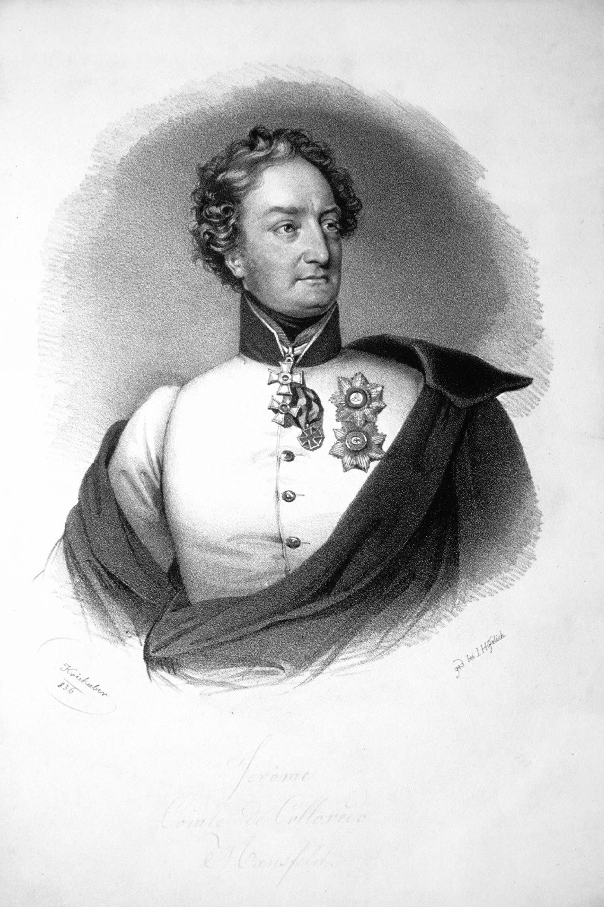
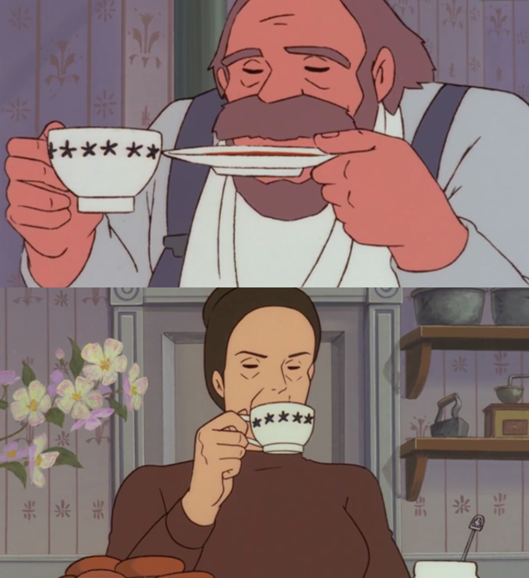
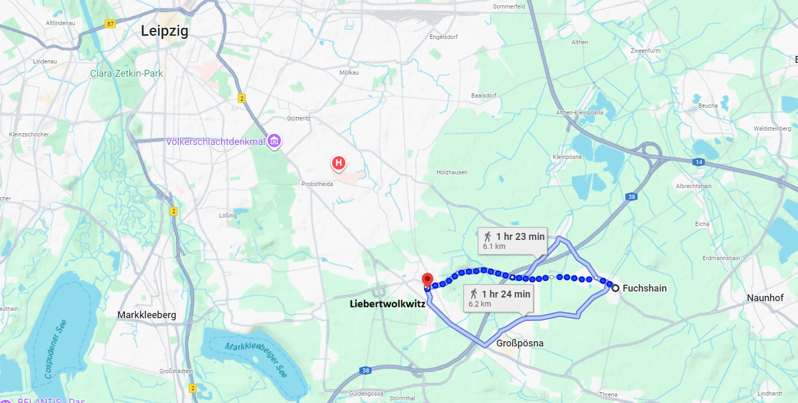
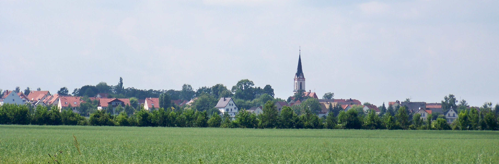
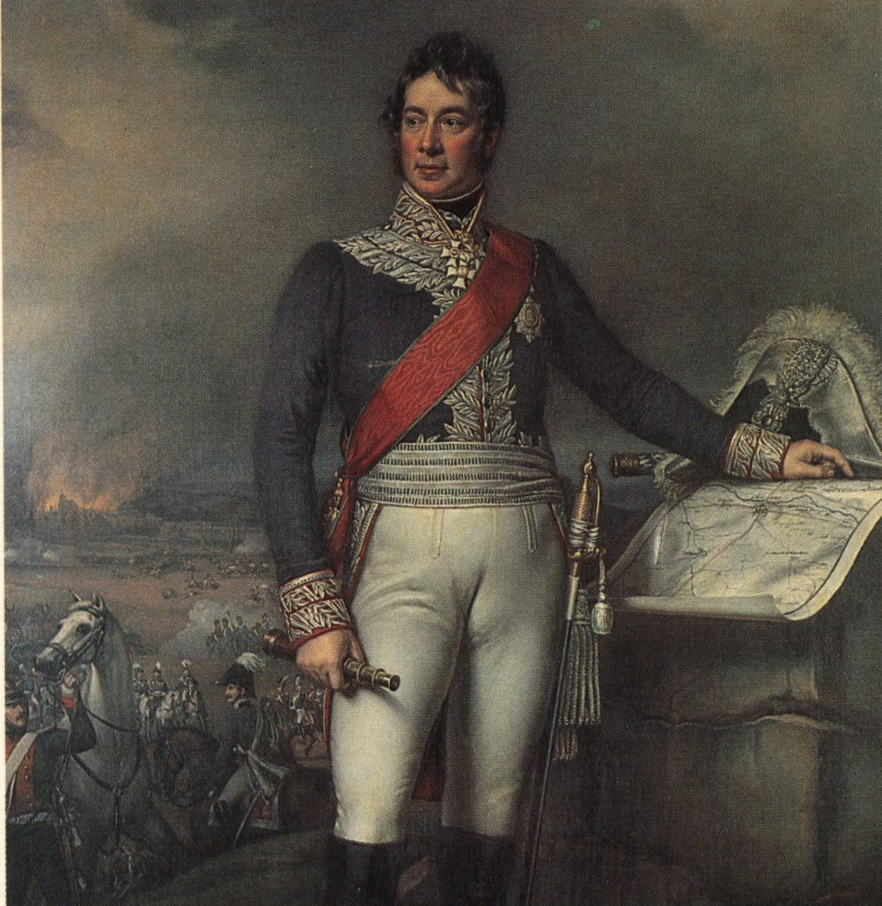

라이프치히 전투 (22) - 휴전인 듯 아닌 듯
게시: 2025-10-20T06:30:45+09:00
나폴레옹이 걱정 90%와 희망 10%의 마음으로 17일 새벽을 맞이하는 동안, 연합군은 나폴레옹의 기대와는 달리 100% 희망에 부풀어 있었습니다. 비록 첫날 전투가 의도한 대로 돌아가지 않았지만, 혼신을 다한 공격을 퍼붓는 나폴레옹의 그랑다르메를 꿋꿋이 막아냈다는 것에서 큰 희망을 갖게 되었기 때문이었습니다. 게다가 곧 베니히센의 폴란드 방면군과 콜로레도(Hieronymus von Colloredo-Mansfeld)의 오스트리아 제1군단, 그리고 베르나도트의 북부 방면군이 각각 동쪽, 남쪽, 북쪽에 도착한다는 것을 잘 알고 있는 마당에, 후퇴할 이유가 전혀 없었습니다. 17일 이른 아침까지만 해도 보헤미아 방면군 수뇌부는 라이프치히 북쪽 전선에서 블뤼허가 홀로 싸워 승리했다는 사실조차 아직 모르고 있었는데도 그랬습니다. 17일 오전 10시 경에야 블뤼허의 전령을 통해 그 소식을 알게 된 뒤에는 더욱 사기가 올랐지요.

(여태까지 잘 언급되지 않았던 인물인 콜로레도 장군입니다. 그는 나폴레옹보다 6살 연하였고 Fürsten(대공) 작위를 가진 고위 귀족가문의 아들로서, 순조로운 군 생활을 시작했습니다. 그러나 그의 상대는 결코 호락호락하지 않아서, 그는 이탈리아에서 젊은 나폴레옹이 오스트리아군을 박살내고 다닐 때 그 박살나던 오스트리아군 중 하나였고, 또 모로가 호헨린덴 전투에서 오스트리아군을 박살낼 때도 그 오스트리아군 중 하나였습니다. 1805년 아우스테를리츠 전투나 1809년 아스페른-에슬링, 바그람 전투 때는 모두 이탈리아 전선에 있었으므로 그렇게 이름을 날리지는 못했습니다. 이 라이프치히 전투에서도 가장 뒤늦게 현장에 도착한 부대의 지휘관이라는 것 외에는 큰 주목을 받지는 못했습니다. 그는 1814년 프랑스로 진격할 때 큰 부상을 입어 오스트리아로 귀국했는데, 후에 그 부상이 덧나는 바람에 나폴레옹이 죽은 뒤 1년 후인 1822년 빈에서 사망했습니다.) 전날 졸전을 펼쳐 사실상 판정패를 당했던 보헤미아 방면군 분위기도 그랬으니, 비록 큰 희생을 치렀지만 분명한 승리를 거두었던 북쪽 전선의 슐레지엔 방면군의 사기는 더욱 높았습니다. 특히 계속 식량 부족에 시달리던 그랑다르메에 비해 상대적으로 보급이 원활한 편이었던 연합군 병사들의 사기는 훨씬 좋을 수 밖에 없었습니다. 당시 블뤼허의 참모진에 '선전(propaganda) 전문가'라는 이상한 직함으로 소속되어 있던 슈테펜스(Heinrich Steffens)라는 이름의 교수가 적은 기록에 따르면 17일 아침, 슐레지엔 방면군 장교들은 아침에 여유롭게 일어나 천천히 옷단장을 하고 하인들이 내온 커피를 마셨다고 합니다. 당시 커피가 전량 수입되는 상당한 고가의 기호품이었다는 점을 생각하면, 보급에 큰 문제는 없었다는 뜻입니다.

(슈테펜스 교수의 기록에서 재미있는 점은, 장교들 일부는 커피를 컵으로 마시고 일부는 작은 접시로 마셨다고 적었다는 점입니다. 실제로 17~18세기 유럽에서는 차나 커피를 찻잔으로 직접 마시지 않고 받침 접시에 부어서 식힌 뒤에 마셨습니다. 톨스토이의 '안나 카레니나'에도 그렇게 차를 받침 접시에 부어 마시는 장면이 나옵니다. 이런 습관은 18세기 초반까지도 유럽의 찻잔에는 중국식 찻잔처럼 손잡이가 없었다는 것과 상관이 있습니다. 원래 중국에서도 뜨거운 찻잔을 손에 잡기 어려우니까 받침 접시와 함께 찻잔을 들고 마셨는데, 유럽에서는 저런 식으로 괴상한 습관을 만들어낸 것이지요. 그러다 18세기 중반부터 손잡이가 달린 찻잔이 나오면서 이야기가 달라졌고, 찻잔에서 직접 마시기 시작했던 것입니다. 그럼에도 불구하고 습관과 예의는 쉽게 변하는 것이 아니라서, 받침 접시에 부어마시는 것이 상스러운 짓으로 간주되는 것은 19세기 후반부에 들어서야 완전히 정착되었다고 합니다. 위의 그림은 다들 아시는 빨강머리 앤의 한 장면입니다.) 북쪽 전선과는 달리, 나폴레옹이 근소하게 우위를 지켰던 라이프치히 남쪽의 주전장에서는 긴장감이 여전히 팽팽했습니다. 일부 전선에서는 양측 포병대가 머스켓 소총 사정거리, 그러니까 약 100 미터 정도를 사이에 두고 대치할 정도로 매우 근접한 거리에서 서로 대치하고 있기 때문이었습니다. 하지만 날이 밝아도 양측은 마치 비공식적인 임시 휴전을 맺은 것처럼 서로 머스켓 소총 한 발 쏘지 않고 조용했습니다. 이는 서로 싸움을 늦출수록 유리하다고 생각했기 때문이었습니다. 먼저, 보헤미아 방면군은 전날 나폴레옹에 대해 우위를 점하지는 못했지만 곧 증원군이 도착하면 아군 병력이 압도적으로 많아진다는 것을 알고 있었으므로 가능하면 증원군이 도착한 뒤에 싸우고자 했습니다. 실제로 콜로레도의 오스트리아 제1군단은 2만2천은 오후 2시 경에 도착했으나 워낙 기진맥진한 상태라 휴식이 필요했고, 폴란드 방면군을 이끄는 베니히센도 그때 즈음 선발대를 이끌고 리버트볼크비츠 동쪽 5km 정도 지점인 푹스하인(Fuchshain)에 도착했으나 그 본대 2만8천은 저녁에나 도착할 예정이었습니다. 북서쪽에서 내려올 베르나도트의 북부 방면군 6만5천에 대해서는 아무런 소식을 듣지 못했으나, 그도 내일 정도면 인근에 도착할 것으로 기대되었습니다. 이들을 다 합하면 무려 10만이 넘는 대군이 추가되는 것이었고, 레이니에의 제7군단 하나가 북동쪽에서 내려와 추가될 예정이었던 나폴레옹에 비해서 압도적인 수적 우위를 확보할 수 있었습니다. 따라서 슈바르첸베르크는 가급적 17일은 싸우지 말고 18일에 싸울 것을 원했고, 알렉산드르를 비롯한 수뇌부도 모두 그에 동의한 상태였습니다.

(푹스하인(Fuchshain)은 격전지였던 리버트볼크비츠에서 불과 5km 정도 떨어진 곳입니다.)

(푹스하인(Fuchshain)이라는 이름은 글자 그래도 여우(fuchs, 영어의 fox) 숲(hain)이라는 뜻입니다. 구미호가 나오던 숲이라서 그런 이름이 붙은 건 아니고 그 일대에 여우굴과 같은 작은 동굴과 움푹 패인 곳이 많아서 그런 이름이 붙었다고 합니다. 지금도 인구 1천명 정도의 작은 마을입니다. 독일 지명을 보면 이렇게 소박한 것이 많습니다. 특히 Peterswald (페터의 숲), Petersberg (페터의 산)처럼 페터의 XX라는 지명을 쉽게 볼 수 있는데, 저는 처음엔 페터라는 사람이 뭐하는 사람이길래 이렇게 가는 곳곳마다 이름을 남겼을까 하고 궁금해했는데, 생각해보니 성 베드로를 말하는 것 같습니다.) 문제는 나폴레옹측에서 공격을 해오면 충분한 병력을 확보하지 못한 상태에서도 어쩔 수 없이 싸움에 응해야 한다는 것이었습니다. 그런데, 나폴레옹은 17일 아침에도 아무런 공격 징후를 보이지 않았습니다. 이건 꽤 의아한 일이었습니다. 나폴레옹도 시간이 갈수록 자신이 불리해진다는 것을 잘 알고 있었을 것이니, 증원군이 도착하기 전에 싸우든가, 정 싸울 처지가 아니라면 연합군의 포위망이 완성되기 전에 탈출하기 위한 기동전이라도 펼쳐야 했습니다. 그런데도 아무 움직임이 보이지 않는다는 것은 연합군이 모르는 무엇인가가 있다는 것처럼 보이기도 했습니다. 하지만 그랑다르메의 포로들을 취조해보아도, 분명히 나폴레옹에게 증원될 병력은 레이니에의 제7군단 뿐이었습니다. 실제로 레이니에의 제7군단은 그날 오후 4시 경에나 쇤너펠트에 도착했습니다. 이렇게 보헤미아 방면군에서는 나폴레옹의 속셈이나 사정을 정확하게는 알지 못했으나, 이미 나폴레옹에 대한 포위망이 거의 완성되었으니 딱히 걱정할 필요 없이 그냥 하루만 더 기다리기만 하면 승리가 손아귀에 굴러들어온다고 확신하고 이 어정쩡한 휴전 상태가 지속되기를 숨을 죽이고 있었습니다. 나폴레옹이 탄약 부족 때문에라도 싸울 형편이 아니었다는 것은 이미 기술한 바 있습니다만, 실은 나폴레옹은 17일 아침, 아직 보헤미아 방면군이 후퇴하지 않고 수비 태세로 자리를 지키고 있다는 보고가 들어오기도 전인 해가 뜰 무렵 이미 후퇴하기로 결정을 내린 상태였습니다. 이유는 그때 매우 안 좋은 정보가 추가로 들어왔기 때문이었습니다. 브레더(Karl Phillipp von Wrede)가 이끄는 바이에른-오스트리아 연합군이 나폴레옹과 프랑스 사이의 교통로를 끊기 위해 움직이고 있다는 소식이었습니다. 이건 결정타였습니다. 아마 나폴레옹이 16일 전투에서 대승을 거뒀다고 하더라도 이 소식에는 움찔할 수 밖에 없었을 것인데, 하물며 후퇴를 고려하고 있는 상황에서는 말할 것도 없었습니다.

(1815년에 그려진 브레더의 초상화입니다. 그는 1814년 바이에른군 원수 계급에 올랐으며, 1815년 빈 회의에서는 바이에른 대표로 참석했습니다. 그러나 그런 모든 영광을 누리기 전에, 아직 나폴레옹에게 처절한 굴욕을 한 번 당해야 할 운명이었습니다. 그 이야기도 머지 않아 곧 나옵니다. 그가 어떤 인물이었는지는 https://nasica1.tistory.com/824 을 참조하시기 바랍니다.) 그런데 나폴레옹은 당장 움직이지 않았습니다. 대체 왜 그랬을까요? 다소 어이없지만 레이니에의 제7군단 때문이었습니다. 만약 17일 오전 중에 나폴레옹이 전격적으로 철수해버린다면, 뒤늦게 도착할 레이니에 군단은 글자 그대로 적진 한 가운데에 홀로 남겨지는 신세가 되었습니다. 따라서, 후퇴하더라도 그날 오후에 도착할 것으로 예상되었던 레이니에 군단을 데리고 가야 했던 것입니다. 이건 약간 의아한 부분이긴 합니다. 나폴레옹은 부하들의 운명에 대해 그렇게 신경 써주는 인자한 장군이 아니었습니다. 거기 그냥 하루 더 머무른 결과 잃을 병력이 1개 군단 규모 이상이었다면, 레이니에 군단 하나 정도는 그냥 버리는 카드로 생각하고 그냥 떠났을 것입니다. 게다가 레이니에에게 파발마를 보내 '여차여차하여 우리 먼저 후퇴하니 너희는 토르가우나 비텐베르크로 돌어가서 농성하라'라고 지시하는 것도 가능은 했을 것입니다. 물론 그게 그렇게 간단하지는 않았습니다. 비텐베르크나 토르가우는 작은 요새 도시로서 1개 군단이 통째로 들어가 농성하기엔 좁은 곳이었고, 또 그 요새들에도 이젠 식량이 많이 남아 있지도 않았으니 오래 농성할 수도 없었습니다. 특히, 레이니에를 기다리는 것은 기다린다고 해도, 어느 방향으로 빠져나갈 것인지 정하고 또 그를 위해 미리 어느 강을 어느 지점에서 건널지 파악하여 미리 부교를 건설하거나 다리를 확보하는 등의 사전 준비를 해야 했습니다. 그런데도 나폴레옹이 17일 하루를 정말 허송세월하며 낭비한 것은 지금까지도 많은 역사가들이 의아해하는 부분입니다. 아무튼 이렇게 나폴레옹이 우물쭈물 머뭇거리는 동안에, 보헤미아 방면군은 이대로 아무 일 없이 오늘 하루가 흘러가기를 기도하고 있었습니다. 그런데, 오전 10시경 전혀 달갑지 않은 포성 소리가 들려왔습니다. 라이프치히 북쪽이었습니다. 대체 무슨 상황이었을까요?
** 알려드릴 것이 있습니다. 제가 좀 긴 여행을 떠나는 관계로 잠시 블로그 활동을 쉬게 되었습니다. 양해 부탁드립니다. 현재로서는 다음 게시물은 11월 10일 월요일에 올라올 예정입니다.
Source : The Life of Napoleon Bonaparte, by William Milligan Sloane Napoleon and the Struggle for Germany, by Leggiere, Michael V With Napoleon's Guns by Colonel Jean-Nicolas-Auguste Noël https://www.britannica.com/event/Napoleonic-Wars/Dispositions-for-the-autumn-campaign https://www.historyofwar.org/articles/battles_leipzig_16_october.html https://warhistory.org/@msw/article/leipzig-battle-of-the-nations https://www.napolun.com/mirror/napoleonistyka.atspace.com/Leipzig_battle.htm https://de.wikipedia.org/wiki/Hieronymus_von_Colloredo-Mansfeld https://en.wikipedia.org/wiki/Karl_Philipp_von_Wrede https://de.wikipedia.org/wiki/Fuchshain